Disassembly/Assembly Procedure
DISASSEMBLY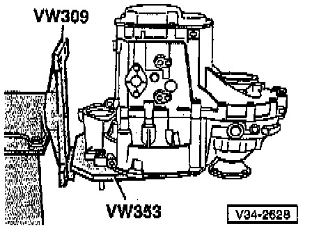
- Mount transmission in repair stand.
- Drain transmission oil.
- Remove clutch release lever, clutch release bearing, and release bearing guide sleeve, refer to Replacement. Service and Repair
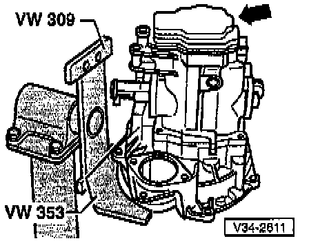
- Remove transmission housing cover (-arrow-).
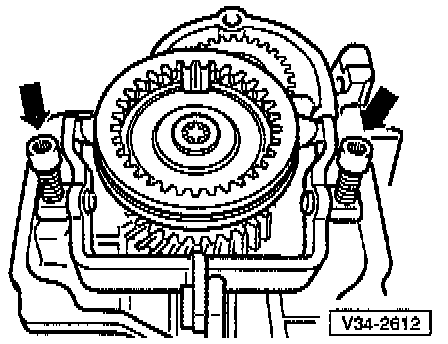
- Remove 5th gear shift fork (-arrow-).

- Remove bolts -A- for synchro-hub and 5th gear.
To do this, engage 5th gear (arrow -1-) and 1st gear (arrows -2- and -3-)
After engaging both gears, the input shaft and the output shaft are both locked, and the synchro-hub and gear cannot turn. Both bolts can now be loosened.
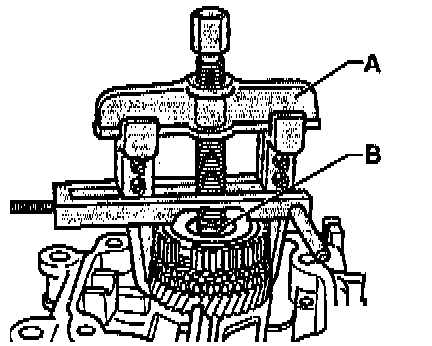
- Remove synchro-hub and 5th gear along with needle roller bearing.
A Two-arm puller and hooks e.g. Kukko 20/10 with Matra V/170 hooks
B Hex bolt (10 x 20 mm)
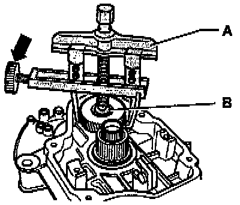
- Remove 5th gear.
A Two-arm puller and hooks e.g. Kukko 20/10 with Matra V/170 hooks
B Hex bolt (10 x 20 mm)
- Removal sequence:
- Install two-arm puller as shown and center by turning adjustment screw (-arrow-).
- Heat gear using VAG 1416 hot air blower, then pull gear off.
NOTE:
^ When removing the gear, make sure that the hooks do not bend outward.
^ If necessary tighten screw (-arrow-).
^ After removing, check 5th gear for damage.
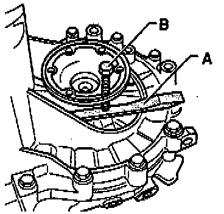
- Remove left-side axle flange.
Transmission Without Springs Behind Axle Flanges:
- Place chisel or spacer -A- under axle flange and pull flange from differential gears by turning bolt -B- (B = previously removed housing bolt).
NOTE:
^ If the axle flange shaft fails to come out straight, use two spacers -A-, and bolts -B-, positioned opposite each other.
^ Tighten both bolts alternately and evenly.
Transmission With Springs Behind Axle Flanges:
- Remove cone-head bolt before removing axle flange.
All Transmissions:

- Remove bolts (-arrows-) for reverse idler shaft support bracket.
For inside bolt (-left arrow-) use Torx T45 key, 100 mm (4 inch) long
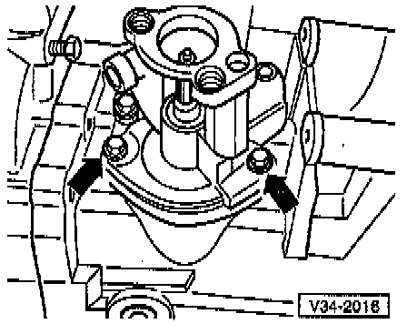
- Shift selector shaft to neutral, then remove bolts (-arrows-).
- Pull selector shaft assembly with cover from transmission housing.
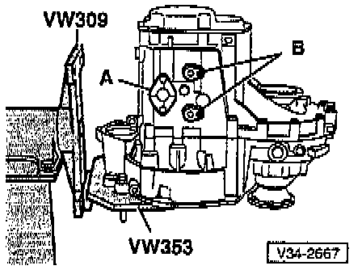
- Remove cover plate -A- and shift fork pivot pins -B from underside of transmission.
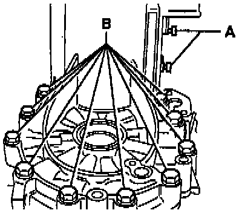
- Remove shift fork pivot pins -A- from upper side of transmission.
- Remove bolts -B- attaching clutch housing to transmission housing in area of differential.
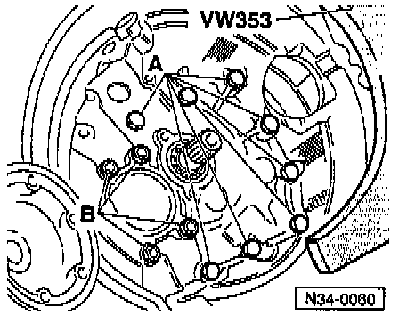
- Remove remaining bolts -A- from inside clutch housing (attaching clutch housing to transmission housing).
CAUTION: Do not yet remove the four nuts -B- for the output shaft bearing support.

- Remove transmission housing.
- If housing won't separate, carefully pry up all around on the protruding housing flange (-arrows-).
CAUTION:
^ Pry gently and evenly, alternating on all sides.
^ Be careful to not damage the sealing surfaces.
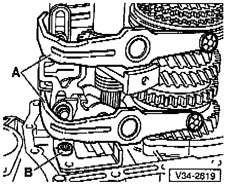
- Remove shift forks -A- together with selector plates.
- Remove bolt -B- retaining selector mechanism for reverse gear.
- Remove nuts (qty: 4) for output shaft bearing support nuts (from inside clutch housing)

- Remove reverse gear -A-, input shaft -B- and output shaft -C-, in that order, from clutch housing.
- Remove right-side axle flange shaft.
NOTE: Removal procedure for right-side axle flange is the same as the procedure for the left-side ax/e flange ~ page 34-51.
- Remove differential.
ASSEMBLY
- Install differential.
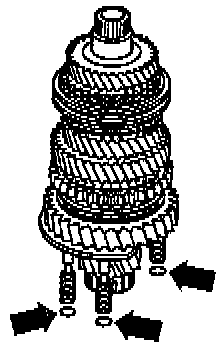
- Always install new sealing rings (-arrows-) on output shaft bearing support.
NOTE: Illustration shows only three of the total of four sealing reaps.
- Install input shaft, output shaft, and reverse shaft together.
- Tighten nuts for output shaft bearing support.
- Clean old thread-locking compound from threads on reverse idler shaft support using tap or equivalent thread cleaner.
- Install reverse idler shaft support.
- Install reverse gear selector mechanism.
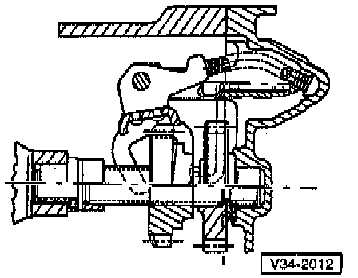
- Check installed position of reverse gear.
- Install shift forks together with selector plates.
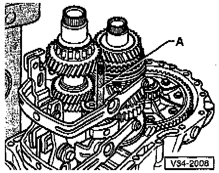
- Install locating stud -A- into reverse idler shaft support to maintain shaft alignment while installing transmission housing.
Stud -A- = 8 x 100 mm
- Align selector plates.
NOTE: The selector segments must be positioned in the grooves on the operating sleeves.
- Install transmission housing.
- Install reverse shaft support bolts (arrow), as follows:
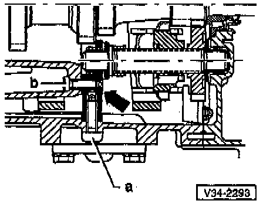
- Install bolt -a-, remove locating stud shown above, then install and hand-tighten bolt -b-.
- Tighten bolts in the following sequence:
1 Bolt -a- tighten to: 30 Nm (22 ft lb)
2 Bolt -b- tighten to: 30 Nm (22 ft lb)
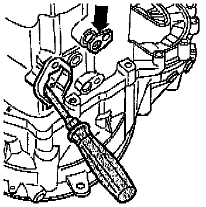
- Align shift fork assembly with screwdriver and install shift fork pivot pin (-arrow-).
- Repeat until ail four pivot pins are installed.
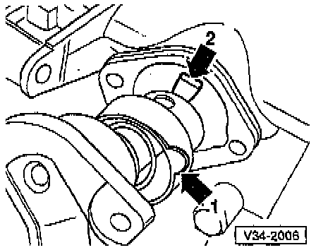
- Install selector shaft as follows:
- Place selector plates in neutral position.
- Position lug (arrow -1-) in recess in transmission housing.
- Position selector shaft so that finger (arrow -2-) can be inserted in selector plates.
- Install selector shaft cover.
Installation Position For 5th Gear
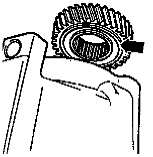
- Groove around circumference (-arrow-) faces transmission housing
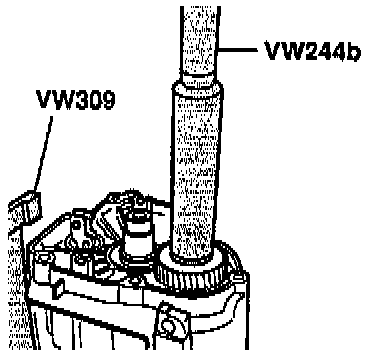
- Drive on 5th gear.
5th Gear Synchro-Ring, Checking For Wear

- Before installing 5th gear, press synchro-ring onto cone of gear and measure gap -a- with feeler gauge.
Gap -a- 5th gear:
New: 1.10-1.70 mm (0.043-0.067 inch)
Wear limit: 0.50 mm (0.020 inch)
- Position 5th gear together with needle roller bearing.
- Place 5th gear synchro-ring on gear.
5th Gear Synchro-Ring, Installation Position

- Pointed teeth of operating sleeve -arrow 1- and high shoulder of synchro-hub -arrow 2- face transmission housing
- Synchro-hub mountings -arrow 3- align with cast synchro-ring locking lugs
5th Gear Synchro-With Cast Locking Lugs
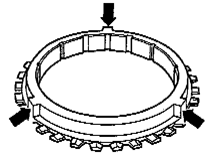
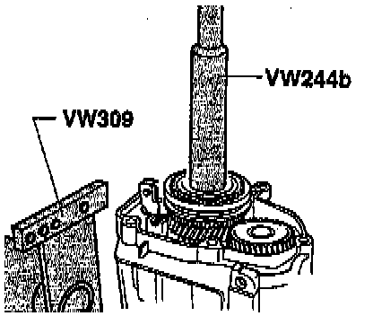
- Drive on 5th gear synchro-hub.
NOTE: Make sure that the synchro-ring is free to move while driving on the hub.
- Install securing bolts for synchro-hub and 5th gear; hand-tighten only.
Belleville Spring/Attachment Bolts For 5th Gear Synchro-hub And 5th Gear, Installation Position
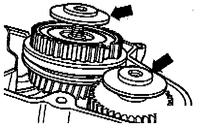
- Outer diameter/concave side (-arrows-) faces 5th gear
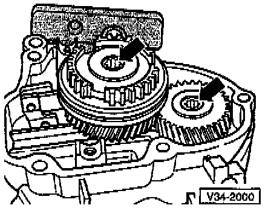
- Engage two gears to lock transmission before tightening synchro-hub and 5th gear securing bolts.
- Install 5th gear shift fork.
Adjusting 5th Gear
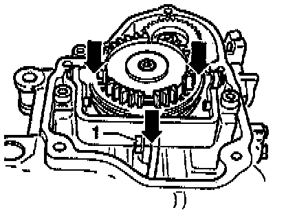
- Engage 5th gear.
- Loosen bolt -1- .
- Press operating sleeve and shift fork in direction of -arrows- and tighten bolt -1-.
Tighten to: 25 Nm (18 ft lb)
- Check measurement:
It must NOT be possible to slide a 0.2 mm feeler gauge between operating sleeve and gear
- If necessary, repeat adjustment procedure.
- Disengage 5th gear.
NOTE:
^ Operating sleeve must now be in neutral position.
^ Synchro-ring must be able to move freely.
- Install transmission housing cover.
Transmission Without Springs Behind Axle Flanges:

- Replace circlips for axle flanges, as follows:
- Clamp axle flange shaft in vise (fitted with protective jaws)
- Press old circlip out of flange shaft groove b, installing new circlip -A-.
- Drive in axle flanges shafts with drift (e.g. VW 295).
Transmission With Springs Behind Axle Flanges:
- Install complete axle flange shaft.
All Transmissions:
- Install guide sleeves for clutch release bearing, then install clutch release lever and release bearing.